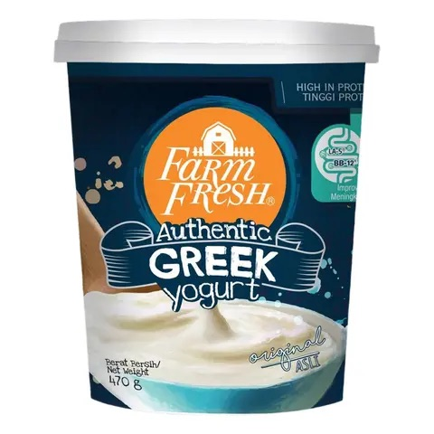
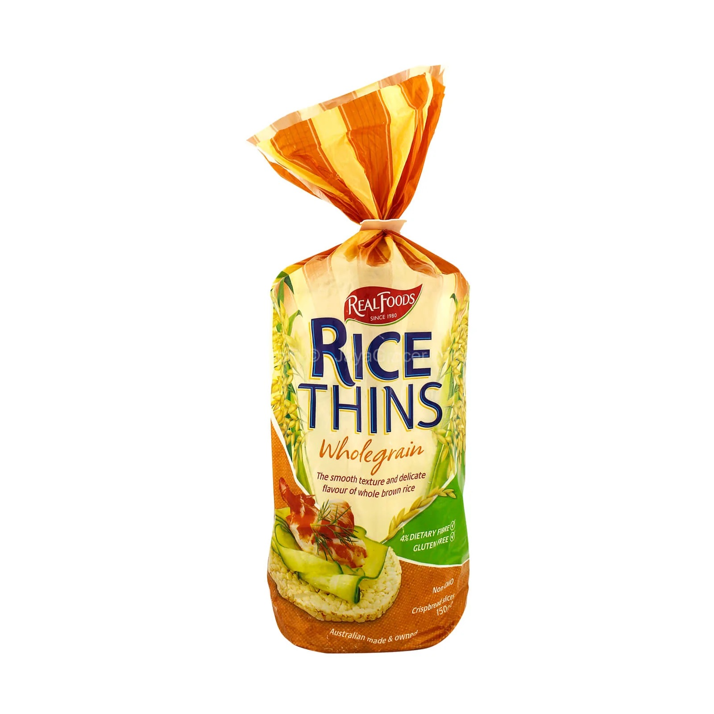
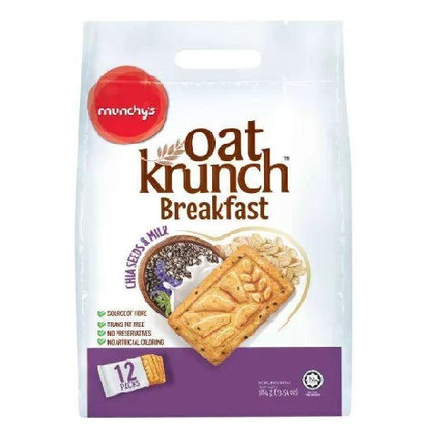
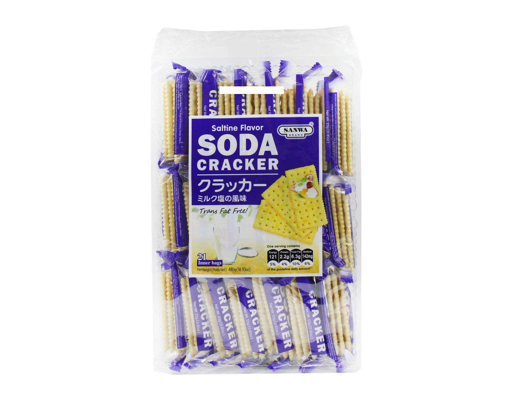
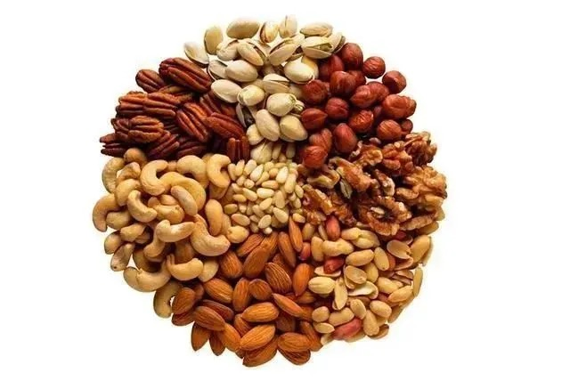

Cecelia 168 Diet Plan (No Dinner)
👉🏻 80kg, 162cm
👉🏻 PBF 44%, BMR 1343kcal
📌 Cholesterol
🫀 Visceral Fat
The Coffee Bean
🍳
Break O' Day
✅
No butter
✅
No jam
🍞
Food for Thought
🦐
Shrimp Cracker Salad
✅
Less salad sauce
🥯
Breakfast Bagel
✅
Try to avoid cheese slice
✅
Less sauce
⚠️ Not Recommended
🙅🏻♀️
Chicken & Cheese Toastie
🙅🏻♀️
Spicy Tuna Sandwich
🙅🏻♀️
Roasted Chicken & Sun-Dried Tomato Bagel Sandwich
O'Briens
✅
Less salad sauce
🥗
Classic Chicken Caesar Salad
🥑
Nicoise Salad
🌯
Classic Caesar Chicken Wrap
☕ Tea Time

1. Yogurt
🥣 Plain Yogurt
🥣 Greek Yogurt (High-Protein)
✅ Avoid Full Cream / Flavoured Yogurt

3. Real Foods Rice Thins (Wholegrain)
🫓 Eat 3 pieces (74 kcal)

4. Munchy's Oat Krunch
(Chia Seeds & Milk)
🍪 1 small packet

5. Sanwa Soda Cracker
🍪 1 small packet

5. Almonds / Walnuts / Pistachios
Selectable if ingredients meet the following criteria
✅ No added sugar · Raw or dry-roasted · Unsalted